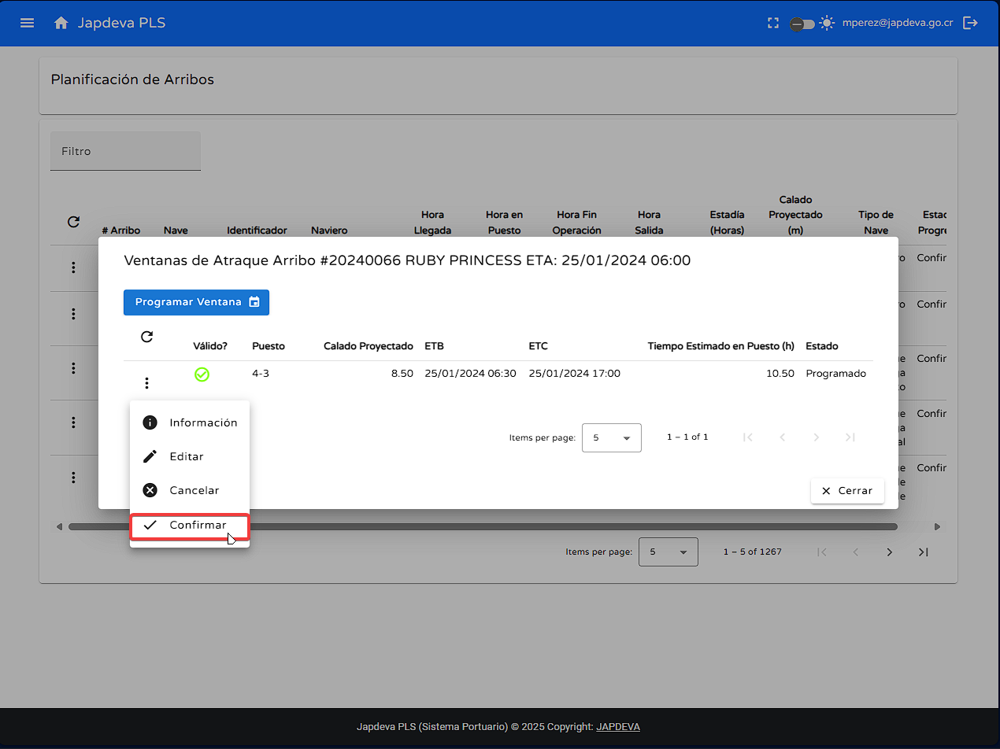

2. Funciones principales
1
Búsqueda por filtro
Para realizar de manera exitosa una búsqueda se deben seguir los siguientes pasos:
- Posicionar el cursor sobre el campo de filtro ubicado en la parte superior de la pantalla.
- Una vez ubicado el campo se deben de ingresar los criterios de búsqueda deseados y si existe alguna
coincidencia
con los datos registrados en el sistema estos se mostrarán automáticamente.
2
Actualización de datos
Para realizar de manera exitosa un refresco de datos correctos se deben seguir los siguientes pasos:
- Posicionar el cursor sobre el botón de actualización ubicado en la parte superior izquierda de la
tabla presente en la pantalla.
- Una vez posicionado el cursor se debe de dar clic sobre el botón para actualizar los datos a los más
recientes registrados en el sistema.
3
Visualizar información de arribo
Para visualizar de manera detallada la información de arribo se deben seguir los siguientes pasos:
- Posicionar el cursor sobre el botón de Opciones ubicado en el lado izquierdo de todas las
filas de la tabla.
- Una vez posicionado el cursor se debe de dar clic sobre él para desplegar la siguiente vista.
- En la vista de opciones se debe seleccionar la opción Información para visualizar los datos
generales en relación al arribo.
- Una vez ubicada la opción se debe dar clic sobre ella para proyectar la siguiente vista.
4
Visualizar información de anuncio
Para visualizar de forma correcta la información de anuncio relacionado a algún navío se deben de seguir
los siguientes pasos:
- Posicionar el cursor sobre el botón de Opciones ubicado en el lado izquierdo de todas las
filas de la tabla.
- Una vez posicionado el cursor se debe de dar clic sobre él para desplegar la siguiente vista.
- En la vista de opciones se debe seleccionar la opción Información Anuncio para visualizar los
datos
generales en relación al anuncio.
- Una vez ubicada la opción se debe dar clic sobre ella para proyectar la siguiente vista.
5
Función editar arribo
Para realizar la edición de un arribo de forma correcta se deben seguir los siguientes pasos:
- Posicionar el cursor sobre el botón de Opciones ubicado en el lado izquierdo de todas las
filas de la tabla.
- Una vez posicionado el cursor se debe de dar clic sobre él para desplegar la siguiente vista.
- En la vista de opciones se debe seleccionar la opción Editar para realizar la edición
necesaria en el arribo deseado.
- Una vez ubicada la opción se debe dar clic sobre ella para proyectar la siguiente vista.
- Dentro de la vista anterior se pueden editar todos los campos requeridos, pero si en cualquier
momento se desea cancelar la edición aún habiendo cambiado datos se puede hacer sin problema alguno.
6
Visualizar ventanas de atraque
Para visualizar de manera correcta las ventanas de atraque se debe de hacer lo siguiente:
- Posicionar el cursor sobre el botón de Opciones ubicado en el lado izquierdo de todas las
filas de la tabla.
- Una vez posicionado el cursor se debe de dar clic sobre él para desplegar la siguiente vista.
- En la vista de opciones se debe seleccionar la opción Ventanas de Atraque para visualizar las
existentes en relación al buque.
- Una vez ubicada la opción se debe dar clic sobre ella para proyectar la siguiente vista.
- Como se puede observar en la vista anterior aparte de desmostrar las diversas ventanas de
atraque previamente
registradas, información de las mismas y opciones extra sobre las estas. Por ende se explicarán cada
una de estas opciones.
- Programar ventana: Contiene todas las opciones para registrar una nueva ventana
siendo estás las siguientes.
- Puesto: Se debe seleccionar el puesto de atraque en el que se desea
programar la ventana siempre respetando la longitud en metros que ofrece el puesto.
- Calado proyectado: Calado proyectado en metros.
- Hora estimada atraque: Se debe de ingresar en formato DD/MM/AAAA y en
horario 24 horas.
- Hora estimada desatraque: Se debe de ingresar en formato DD/MM/AAAA y en
horario 24 horas.
- Observaciones: Información adicional que se desea agregar.
- Actualizar información: Permite actualizar la información de ventanas a la más
reciente cargada en el sistema.
- Acciones extra: Entre las acciones extra se encuentran las siguientes:
- Información: Información general sobre la ventana seleccionada.
- Editar: Permite la modificación de información en la ventana seleccionada.
- Cancelar: Cancela la ventana seleccionada.
- Confirmar: Confirmar la ventana seleccionada.

- Explicación de información en tabla:
- ¿Válido?: Indica si la ventana seleccionada es válida o no.
- Puesto: Indica el puesto de atraque en el que se programó la ventana.
- Calado proyectado: Indica el calado proyectado en metros.
- ETB: Hora estimada de atraque.
- ETC: Hora estimada de finalización.
- Tiempo estimado en puesto: Tiempo estimado en el puesto medido en
horas.
- Estado: Indica el estado de la ventana.
7
Función mover inicio de operación
Para realizar el movimiento de inicio de operación se debe de seguir los siguientes pasos:
- Posicionar el cursor sobre el botón de Opciones ubicado en el lado izquierdo de todas las
filas de la tabla.
- Una vez posicionado el cursor se debe de dar clic sobre él para desplegar la siguiente vista.
- En la vista de opciones se debe seleccionar la opción Mover Inicio de Operación.
- Una vez ubicada la opción se debe dar clic sobre ella para proyectar la siguiente vista.
- Como se puede denotar esta pantalla previa tiene una serie de espacios para manejar, siendo estos
los siguientes.
- Tipo: El tipo hace referencia a que clase de marcador temporal se desea mover,
por ejemplo: Horas, minutos o días.
- Tiempo en: Hace alusión a la cantidad de tiempo en números enteros que se desea
mover el inicio de operación.
- Observaciones. Se puede agregar una observación adicional del ¿Por qué? el
movimiento de inicio de operación..
Advertencia: Todos los campos son de carácter obligatorio.
8
Función cancelar operación
Para realizar el cancelamiento de operación se debe hacer:
- Posicionar el cursor sobre el botón de Opciones ubicado en el lado izquierdo de todas las
filas de la tabla.
- Una vez posicionado el cursor se debe de dar clic sobre él para desplegar la siguiente vista.
- En la vista de opciones se debe seleccionar la opción Cancelar.
- Una vez dado clic en la opción se debe confirmar que desea cancelar la operación.
9
Visualización de información pantalla Planificación de Arribbos
Para brindar una explicación sencilla y directa de los diversos campos que ofrece la tabla presente en
pantalla se explicarán de forma resumida cada uno de ellos. (De izquierda a derecha).
- # arribo: Número de arribo brindado por la empresa con el cual se puede manejar
todo lo relacionado con el navio.
- Nave: Nombre de la embarcación y cómo se encuentra registrada en el sistema.
- Identificador: Número de identificación con el cual la embarcación se encuentra
registrado ante los entes internacionales como por ejemplo el IMO.
- Naviero: Persona o empresa encargada de los barcos.
- Hora llegada: El Estimated Time of Arrival se refiere a la hora estimada de llegada
del barco a la bahía.
- Hora en puesto: El Estimated Time of Boarding se relaciona a la hora estimada de
ubicación del barco en el puesto de carga.
- Hora fin operación: El Estimated Time of Completion se refiere a la hora estimada
que debe terminar la operación del barco en el puesto de carga.
- Hora salida: Por último, en relación a los tiempos de operación se encuentra el
Estimated Time of Disembarkment que hace referencia a la hora estimaada de salida de puerto de la
embarcación.
- Estadía: Tiempo total que se encontrará el navío en el puerto de carga, se debe
reflejar en horas.
- Calado proyectado: Calado estimado en metros.
- Tipo de nave: Este apartado toma en cuenta el tipo de nave registrado en el sistema
y las categorías de COCATRAM para confeccionar está información.
- Estado progreso: Referente al estado de progreso del barco en el sistema.